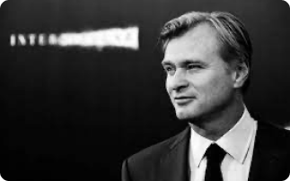

RÉALISATEUR
Christopher Nolan est un réalisateur, scénariste et producteur de cinéma britannique de renommée mondiale. Né le 30 juillet 1970 à Londres, il est connu pour son style distinctif, son utilisation ingénieuse de la narration non linéaire et sa capacité à créer des films qui défient souvent les conventions du genre. Nolan a acquis une notoriété considérable grâce à des œuvres cinématographiques majeures telles que "Inception", "The Dark Knight Trilogy" (composée de "Batman Begins", "The Dark Knight" et "The Dark Knight Rises") et "Interstellar". Ses films se caractérisent par leur complexité intellectuelle, leur exploration des thèmes de la réalité et de la perception, ainsi que leur utilisation habile de l'ambiance sonore et visuelle. Sa maîtrise de l'art cinématographique lui a valu de nombreux prix et distinctions, et il est considéré comme l'un des réalisateurs les plus influents de sa génération. Le travail de Christopher Nolan continue d'inspirer et de captiver les cinéphiles du monde entier, et son impact durable sur l'industrie cinématographique en fait une figure incontournable du septième art.
AUTRES FILMS